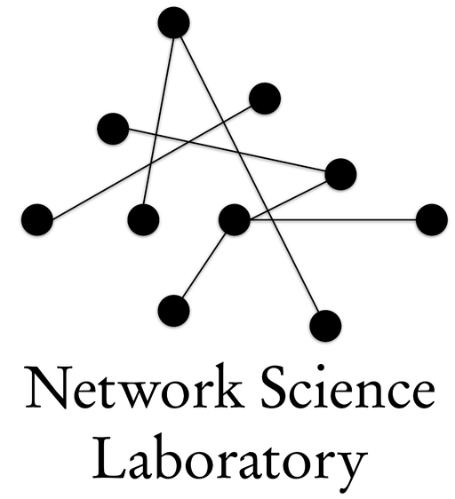

Network Science Lab @ GNU

at the Department of Physics, Gyeongsang National University (경상국립대학교)
Network science is a research field about real-world interaction structures, beyond the realm of conventionally treated completely regular or random interactions in traditional statistical physics. Examples encompass numerous types of networks, e.g., power grids, the Internet, social networking services, ecosystems, metabolism and genetic interactions in biological systems. The brain, dubbed as ‘the most complicated system in the universe known to itself,’ is also a network composed of a vast number of neurons. Artificial neural networks, which are widely adopted in machine learning, also learn things by simulating signal transmission in the brain. We investigate fundamental problems such as hidden structural properties lurking in networks and dynamical processes on networks for a more comprehensive understanding of networked systems.
If you are interested in this exciting field of research, please do not hesitate to contact the principal investigator Sang Hoon Lee.
네트워크 과학(network science)은, 기존 통계물리학의 연구 대상이었던 완벽하게 규칙적(regular)이거나 완벽하게 무작위(random)인 상호작용(interaction) 구조를 넘어선 실제 세상에 존재하는 다양한 형태의 연결 구조를 연구하는 분야이다. 전력망, 인터넷, SNS, 생태계, 생물체 내부의 대사 작용과 유전물질 등 수많은 종류의 연결망이 네트워크 과학의 대상이며, 대표적으로 ‘우주에서 자기 자신에게 알려진 가장 복잡한 구조’인 두뇌 역시 수많은 신경세포들이 연결된 네트워크이다. 기계학습(machine learning)을 위해 널리 쓰이는 인공신경망(artificial neural network) 역시 바로 그러한 두뇌 연결망의 신호 전달과 같은 과정을 통해 학습을 구현하는 것이다. 본 연구실에서는 네트워크에 숨어 있는 구조적 성질, 네트워크에서의 동역학 과정 등 네트워크에 대한 전반적인 이해를 넓히는 연구를 수행한다.
이러한 흥미롭고 중요한 연구 분야에 관심이 있으신 분들은 주저 없이 담당교수인 이상훈 교수에게 연락하셔도 됩니다.
Click each of the images above to see what it is. 아래 그림들이 뭔지 궁금하시면 해당 그림을 클릭해 보세요. 😀
Funded 💰 by the National Research Foundation of Korea (NRF): RS-2026-25468383 (March 2026–February 2031).
Previously, NRF: RS-2022-NR070746 (June 2022–February 2025), RS-2021-NR061247 (March 2021–February 2026), and RS-2018-NR032109 (September 2018–August 2021).